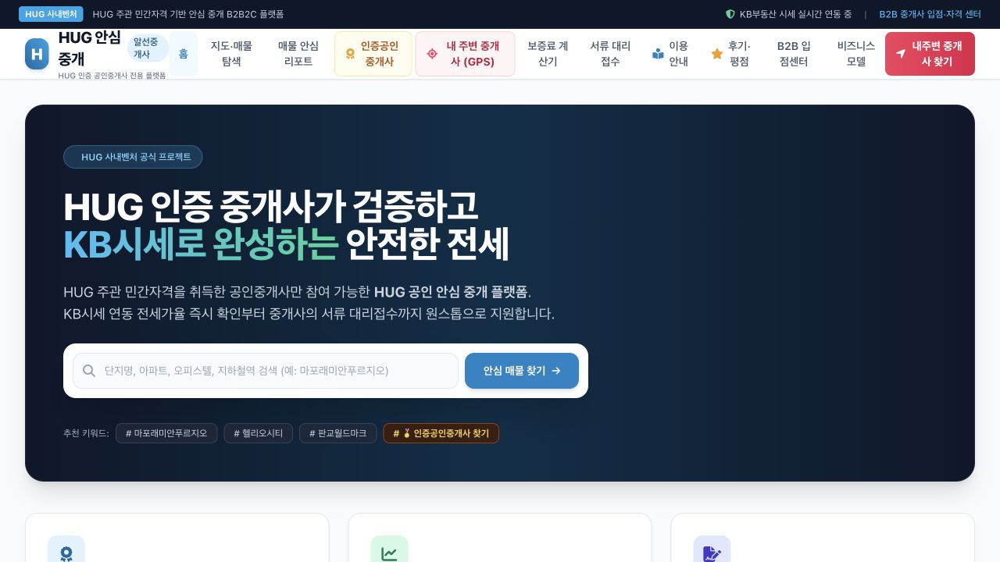
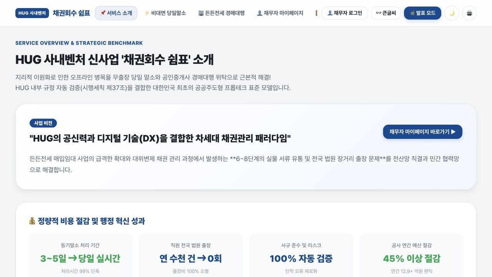
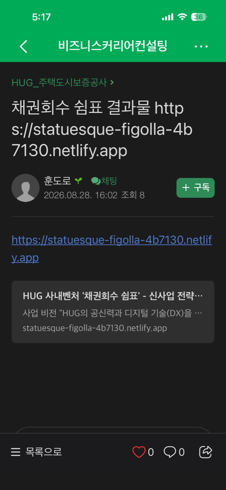

사이트 완성
기관 업무 아이디어를 바탕으로 Antigravity에서 홈페이지를 제작했습니다.
가능했습니다. Antigravity로 홈페이지를 완성하고 배포용 폴더를 만든 뒤, Netlify Drop으로 배포해 누구나 접속할 수 있는 Public 링크까지 생성했습니다.
기능을 구경하는 수업이 아니라, 완성된 결과물을 직접 공개하는 흐름으로 진행했습니다.
기관 업무 아이디어를 바탕으로 Antigravity에서 홈페이지를 제작했습니다.
웹에서 실행할 수 있도록 필요한 파일을 배포용 폴더로 정리했습니다.
배포 폴더를 Netlify Drop에 드래그해 공개 주소를 생성했습니다.
공개 범위를 Public으로 설정하고 외부에서 접속 가능한 링크를 확인했습니다.
두 결과물 모두 2026년 8월 28일 공개 주소에서 직접 접속을 확인했습니다.

안심 매물 탐색, 인증 중개사, 보증료 계산기 등 업무 아이디어를 하나의 웹 화면으로 구현한 교육 실습 결과물입니다.
Public 결과물 확인 ↗
신사업 소개, 경쟁 비교, 채무자 마이페이지, ROI 계산기와 전략 로드맵을 연결한 교육 실습 결과물입니다.
Public 결과물 확인 ↗
사이트 파일 생성에서 멈추지 않고, 교육 당일 공개 링크를 생성해 다른 기기에서도 확인할 수 있는 상태까지 마쳤습니다.